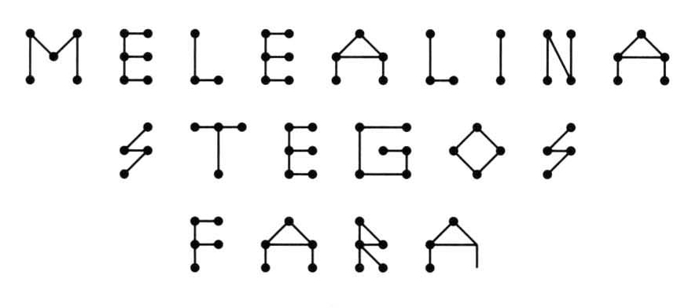
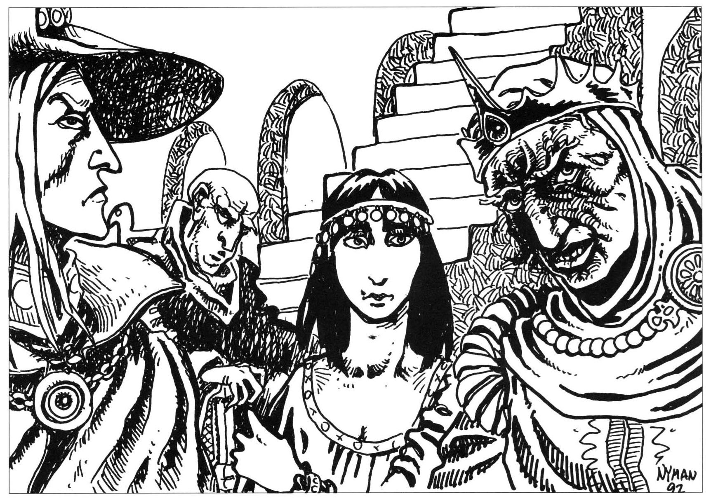
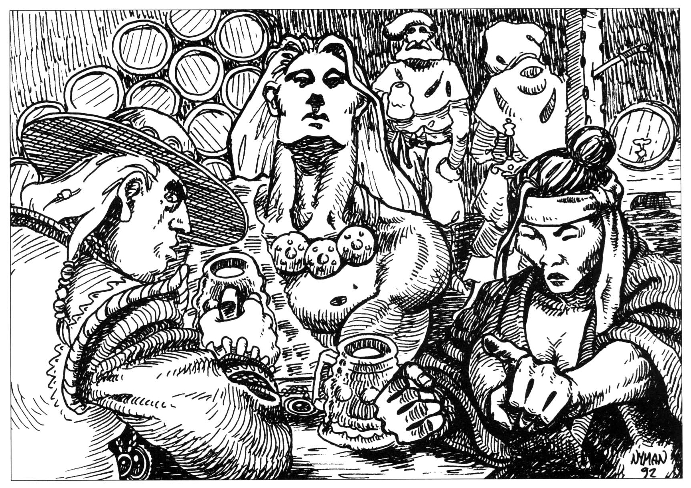
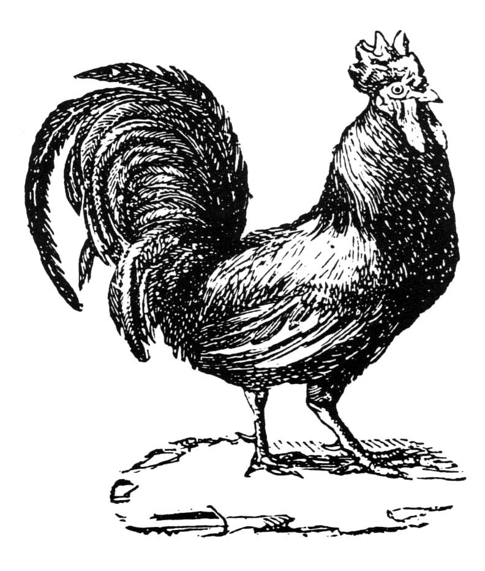
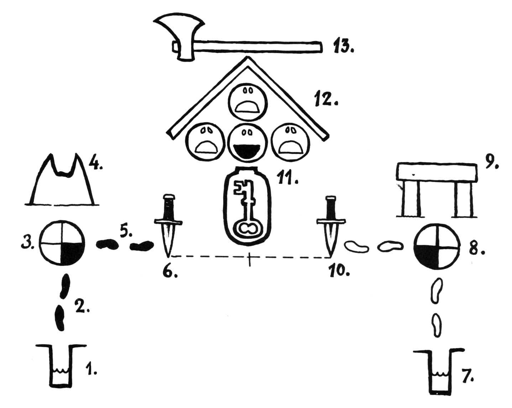
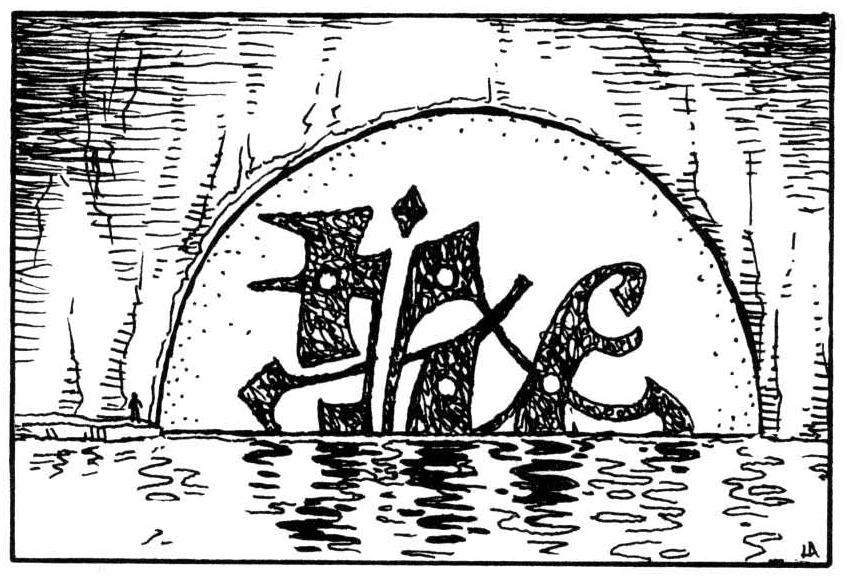
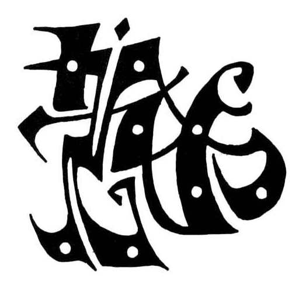
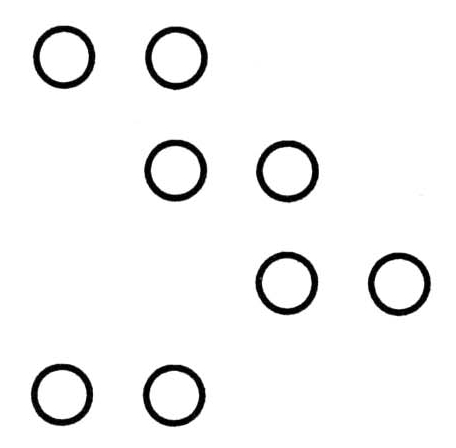
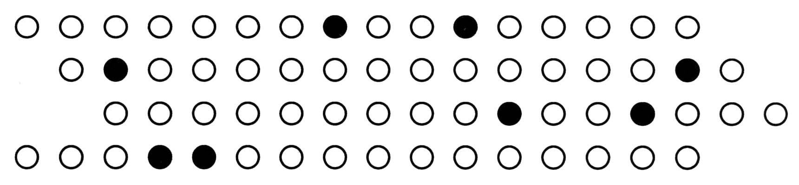
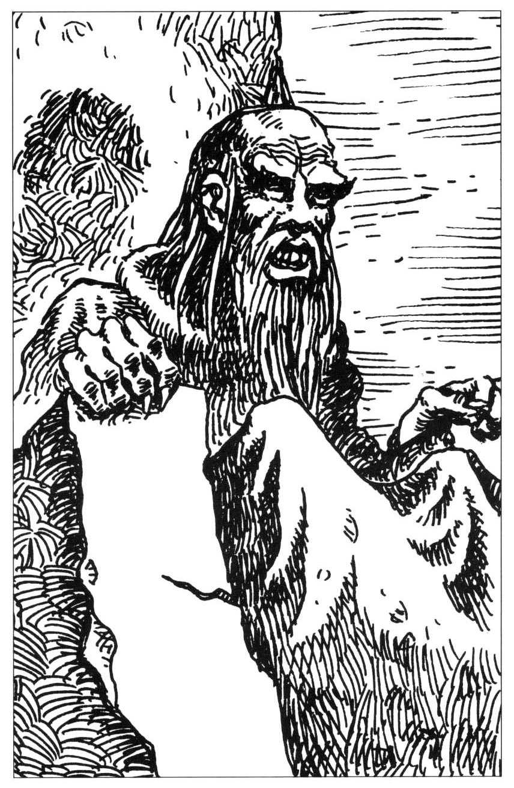

02. Spelvärlden
Spelöppning
Melealinas nödrop
Det här äventyret kan i princip börja hur som helst, till exempel mitt i ett annat äventyr som kan fortsätta senare — om man överlever till dess. Allt som behövs är att spelarna befinner sig inomhus någonstans i närheten av Trakorien. Det har gått några månader eller längre sedan Melealina, Manghalde och de andra oraklen sökte skydd hos kung Arn den förste av Stegos.
SL låter några vardagliga händelser inträffa, kanske ett krogslagsmål, ett besök av en vandrande köpman eller varför inte av en ranzinermunk för att sätta fart på gamla elaka minnen. Medan man sitter och äter/diskuterar/plåstrar sår, hör någon av rollpersonerna (skicka lapp) hur en hackspett slår sig ner och börjar hamra med näbben någonstans utanför huset. Inget märkligt i det. Efter en stund blir någon dock irriterad och ska just gå ut för att schasa bort fågeln när hackningarna byts mot utdragna djuriska skrän. På väggen finner man en döende hackspett fastnaglad av en pil vid fönsterluckan/dörren. Fågeln har hackat en mängd regelbundna hål i träet. Djuret tystnar snart och blir allt mörkare. Från en grå levande nyans blir det i döden helt svart. Dess onormalt stora ögon är röda och inflammerade.
Ett lyckat Zoologi => Hackspetten är av en art som varken finns i Trakorien eller på kontinentens fastland. De stora ögonen tyder på en nattlevande art, vars ögon skadats av flera dagars vistelse i dagsljus.
Ett lyckat Finna dolda ting => man upptäcker att hålen som fågeln hackat bildar följande mönster:

SL: Hackspetten hann inte fullborda sista bokstaven innan den sköts, men meddelandet lyder i klartext:

Den som skjutit fågeln kommer fram och vill ha den. SL kan låta skytten vara vem som helst, en vanlig jägare med ovanligt skumt utseende, en soldat, en samlare eller en buspojke. Skytten kan också vara en av Shaguls spioner som följt djuret från Stegos.
Resan till Stegos
Budskapet bör få rollpersonerna att snarast resa tillbaka till Stegos och Melealina. Själva resan kan spelas med hjälp av Trakorienmodulen.
Observera att hela Trakorien är en krigshärd med många inblandade parter. Det finns alla chanser att stöta på militärpatruller och plundrande rövarband om man inte är försiktig. Myndigheterna är mycket misstänksamma mot kringresande främlingar. Sannolikt tas de in för förhör eller hängs i närmsta träd för spioneri.
Stegoserna är ännu folkskygga efter sin långa isolering. Den enda regelbundna sjöfarten till ön går från Albarunzias hamn på Palamux. Som regel släpper man bara iland speciellt inbjudna gäster eller medlemmar av Joobalashersekten från Frand.
Om rollpersonerna kommer till Albarunzia, ska en båt med joobalasherpräster just avgå mot Stegosi huvudstad Mea Plakole. Kaptenen vill inte låta rollpersonerna följa med. Joobalashernas ledare kan dock intyga att äventyrarna verkligen blivit kallade till Stegos (eller att de ljuger om så är fallet), bara han får se talaren i ögonen under berättelsen. Kaptenen kan på detta sätt övertalas att släppa ombord sällskapet under förutsättning att man även lyckas med Övertala.
Ett lyckat Muta eller ett lyckat Kulturkännedom => Mutor är högst olämpliga i den religiösa nytändning som råder.
Om äventyrarna själva seglar mot Stegos blir de hejdade av en örlogsman och får tala sig ur knipan innan de eskorteras vidare till Mea Plakole.
Ett sidospår: Förrädaren
I hamnen eller under överfarten kontaktas någon rollperson diskret av en joobalashermedlem. Mannen intresserar sig för rollpersonens hemtrakter innan han kommer till sitt egentliga ärende. Är främlingen intresserad av att tjäna pengar? STORA pengar? Joobalashermunken har vänner som skulle betala en orimlig summa om ett visst pulver (mycket praktiskt förpackat i vax som ju redan förekommer naturligt i många kroppsöppningar) hamnade i kungens bägare. En smal sak och dessutom gott förskott i form av en liten men välslipad diamant. Främlingen kommer alldeles säkert att få kungens förtroende och i annat fall kan han ju behålla diamanten. Fler glittrande stenar väntar hur som helst då uppdraget är utfört...
SL: Förrädaren är en kungatrogen provokatör från Stegos som vill testa rollpersonernas pålitlighet. Diamanten är äkta men av oren kvalitet och bara värd 30 silvermynt. ”Giftet” är ett ofarligt ämne som blir intensivt blålysande fem minuter efter att man löst det i vätska. När rollpersonerna träffar kungen bör SL ge dem tillfälle att stoppa ”giftet” i majestätets vin. Om de verkligen försöker utföra attentatet kommer de att avslöjas när vinet blir blått. De grips då och avrättas nästa morgon. Hur det än går kommer ”förrädaren” så småningom in i rådssalen och berättar att det hela var en prövning.
Stegos huvudstad - Mea Plakole
Artiklar: Stegos, Ghummgakk Personer: Arn Dunkelbrink, Naramsi av den Östra Klyftan, Enu Garasuga
Mea Plakole beskrivs inte närmare eftersom spelarna aldrig får tillfälle att röra sig i fritt i staden — smyger de runt blir de snart igenkända som icke-stegosier och förda till garnisonen. Bebyggelse och hantverk ger ett ålderdomligt intryck. Stämningen är stillsam och handeln inte alls lika bullrig och uppfläkt som i Tricilve och Soblak.
Så snart de stiger av båten förhörs rollpersonerna om sitt ärende av en officer i hamngarnisonen. Förhöret hinner knappt börja innan det avbryts av en mycket högt uppsatt militär som omedelbart eskorterar sällskapet till kungapalatset.
SL: Rollpersonerna är redan eftersökta. När olyckan drabbade Melealina stod kungen Arn Dunkelbrink maktlös och villrådig. Det föll sig naturligt att söka hjälp från alvkvinnans vänner. Kungen har antingen träffat dem själv eller hört Melealina berätta om deras bedrifter.
Om Shagul fortfarande sköts av en spelare, kan hamnofficeren som började förhöra rollpersonerna vara en spion i nekromantikerns tjänst. Shaguls introduktion till det här äventyret blir i så fall det officeren lyckas ta reda på innan han avbryts. Ge honom fem spelminuters förhör.
Arn Dunkelbrinks rådssal
Vid kungapalatset förs äventyrarna utan dröjsmål in i rådssalen.
Överblick: Slottet saknar i stort sett utsmyckning eftersom både Arn D. och prästerna ogillar all bjäfs och pynt. Kungen sitter hålögd, okammad och smårusig vid kortänden av ett stort bord, med en bägare vin och en tallrik kastanjegröt framför sig. På olika platser i rummet finns ett tjugotal personer, däribland bleka stegosiska riddare, joobalasherpräster från Frand, någon ädling från Lasemos och en handfull dugliga livvakter.
Rollpersonerna blir tillsagda att vänta under tystnad innanför dörren. Något slags uppgivet rådslag är i full gång. Stämningen i salen är betryckt och irriterad. Kungen fyller gång på gång sin bägare. De otäcka händelserna med Melealina och Manghalde var inte väntade. Melealina har aldrig varit populär på Stegos. Hon betraktas av många som en trollkvinna som förhäxat kungen. Misslyckandet med transferritualen har fått mäktiga grupper att tvivla även på kungen, speciellt sedan det blivit tydligt att han älskar den mystiska alvkvinnan. Tron på Stegosi lysande framtid har fått sig en törn och nu vet ingen hur man ska agera.
Rollspelarna kan snappa upp ord som:
Kungen: ”Jag leder kontinentens bästa soldater. En drake ligger vid mina fötter. Gudarna är på min sida... Men jag kan inte hjälpa min kvinna! Vi måste hjälpa henne! Ni måste hjälpa mig!”
En joobalasherpräst (sneglar kallt mot rollpersonerna): ”Hur vet ers majestät att halvkvinnan menar just dessa personer? De liknar vanliga lösdrivare.
Kungen: ”Vakta din tunga, eländige klerk! Även jag har varit lösdrivare! Äkta guld bländar sällan ögat.
Riddar Naramsi: ”Deras djup bör ändå lodas innan mer kan sägas. Lät dem möta moder Himesias blick.
Kungen (uppgivet): ”Må ske, bara det går fort. Låt hämta kvinnan från templet.
På kungens befallning hämtas mat och dryck åt nykomlingarna under deras väntan.
Moder Himesia
Efter någon halvtimme förs en äldre stegoserkvinna med behagligt sätt in i rådssalen. Detta är moder Himesia, vars sannsyn förmår utforska människans innersta. Himesia kan bedöma personers allmänna karaktär, men inte läsa deras tankar. Hon kommer på kungens uppmaning att se in i gästernas ögon och berätta det hon ser i liknelser, såsom:
Om en enkel men lojal jägare: ”Jag ser en grund vattensamling med klart friskt vatten. En liten fisk jagar det gyllene ljuset, men vänder åter till sina kära innan solen går ner.”
Om en hätsk men hövisk krigare: ”Glöden flammar i eld då det svarta kolet läggs nära. I dess hetta söker en liten vit fågel skydd utan att förtäras av lågorna.
SL får använda sina poetiska talanger så långt de bär honom. Himesia kommer senare i enrum att berätta för kungen om dolda sidor i gästernas personlighet.
Om någon vägrar att låta sig avläsas kommer denne att hånas av kungen för sin rädsla inför en gammal bräcklig kvinna. Ger personen inte med sig drar han misstankar på sig och får vänta på de andra under bevakning i hamnen. Man kan dölja sin personlighet helt med hjälp av diskret magi, och hemlighålla något speciellt otrevligt karaktärsdrag genom att övervinna Himesias INT som för detta syfte räknas som 22.
Melealina i meditationskammaren
De rollpersoner som består provet får följa kungen till meditationskammaren varifrån Melealina och Manghalde gjorde sin olyckliga färd i bortomvärlden. Opålitliga personer får vänta under bevakning i hamnen.
Överblick: Bakom en oansenlig dörr finns en mindre kammare utan eget ljus. Åskådarnas facklor lyser dock upp scenen. Mitt i rummet svävar alvkvinnan Melealina i en underlig kroppsställning. Hon är inte stilla utan tumlar sakta genom luften. Hennes kropp påverkas passivt av osynliga krafter som om hon knådades av tusen fingrar. Ögonen är halvöppna men oseende och ingen andning märks. På golvet under henne ligger de blodiga, men svartnade resterna av en fullständigt söndertrasad människa. Tryckt mot långväggarna står två orörliga soldater vars blåbleka drag är tillplattade som om deras huvuden inneslutits i en trång glasflaska. De ser mycket döda ut, men hålls i upprätt ställning av någon okänd kraft.
Kungen berättar: ”Hon sa att hon visste var Store Stenfar finns. Hon och den stinkande trollkarlen gav sig in på någon slags ohelig seans. Det såg väl ut till att börja med, men plötsligt kastade en osynlig kraft ut en av vakterna genom dörren. De två andra klämdes upp mot väggen där de fortfarande står som ni själva kan se, arma krakar. Alvkvinnan och trollkarlen talade med någon därinne, men den överlevande vakten, som stod där vi själva står just nu, såg inget och hörde inte heller deras röster. Plötsligt strimlades trollkarlen inför vaktens ögon och han sprang efter hjälp. När man kom tillbaka svävade alvkvinnan i rummet så som ni själva ser. Det var XXX dagar sedan det inträffade (SL anpassar tidpunkten till den dag hackspetten bör ha givit sig av från Stegos.)
Detaljer: Försöker man gå in i rummet, hejdas man redan i dörren av en osynlig, halvelastisk barriär som inte kan genomträngas med några medel.
SL: Vid det olyckliga mötet med Ebharing fylldes rummet av främmande utrymme från de grå hallarna (se inledningen). De två vakterna klämdes fast längs väggarna där de kvävdes utan att kunna ta sig loss. De blodiga resterna på golvet är det som finns kvar av Manghalde. Det går att ta sig in i rummet med en transferritual, men resenären hamnar då vid Melealinas sida inne i demonen Ghumgakks tarmar (se nedan), vilket varken är trevligt eller hälsosamt.
Vad hände i de grå hallarna?
Melealina räddades i sista stund från Ebharing genom att demonen Ghumgakk slukade henne. Den svarta portalen var i själva verket hans mun. Hon befinner sig skyddad i demonens inre i väntan på att rollpersonerna ska besvara hennes nödrop. Eftersom demonen och allt annat utomvärldsligt är osynligt, ser man bara alvkvinnan inne i demonen. När vännerna nu dyker upp pressas Melealina ut ur Ghumgakks orena ände och faller ner på golvet som efter en andra födelse. Samtidigt blir rummet normalt. Luft rusar in genom dörren i en plötslig stormvind och de döda vakterna faller ihop. En ohygglig stank från demonen och från de döda slår emot åskådarna, men Arn D. rusar in i rummet och lyfter ömt alvkvinnan i sina armar.
”Hon lever”, vrålar han i tårar. ”Hämta hovbotaren”.
Som alternativ kan rollpersonerna vara tvungna att komma på hur Melealina ska kallas tillbaka, eller själva hämta henne genom en transferritual. Observera att det som hänt stämmer väl med versraderna 70-72 i Vox Ranzina (se Oraklets fyra ögon). Lösningen kan till exempel vara att läsa upp dessa versrader för alvkvinnan.
Melealina vaknar
Melealina ligger medvetslös ytterligare någon dag sedan hon återvänt till vår värld.
Strax innan hon vaknar, lyckas en ung, fanatisk joobalasherpräst ta sig in till den sovande alvkvinnan och stöta en dolk i henne. Han övermannas omedelbart av vakterna. Mannen släpas ut, skrikande slagord som ”Död åt häxan! Död åt den falske kungen! SHAMASH lever! Sanningen ska segra!” Attentatet får Melealina att vakna ur sin sömn. Hon stiger upp, till synes oskadd, går fram till mannen och säger: ”Namn kan kanske skada mig, men aldrig käppar eller stenar!”
Mördaren har inget med Shagul att göra, utan är en Kishatertrogen, religiös fanatiker vid namn Varicras. Högre joobalasherpräster tar officiellt avstånd från dådet. De kräver att mannen pinas och avrättas offentligt.
Genom Melealinas inflytande skonar kungen dock angriparen. Mannen landsförvisas och skeppas iland på Saphyna med uppmaningen att aldrig visa sig på Palamux eller Stegos igen. Naturligtvis dyker han upp senare i äventyret, såvida rollpersonerna inte diskret tar honom av daga.
Rollpersonerna får sitt uppdrag
Nu vill alvkvinnan omedelbart träffa rollpersonerna. Efter kära hälsningar, vänner emellan, berättar Melealina vad som hänt henne och vad demonen Ghumgakk förklarat, bortsett från de hemliga delarna. (Spelarna kan få läsa den inledande scenen.) Melealina berättar spådomen om Store Stenfar som måste föras till Stegos för att Arn Dunkelbrink ska kunna regera Palamux-Stegos och därmed hela Trakorien. Detta är i sin tur enda sättet att rädda den femte konfluxen och därmed rädda norra kontinenten från Shagul.
Ett råd sammankallas med kungen, Melealina, prästen Garasuga, Naramsi och rollpersonerna, där man beslutar att skicka iväg äventyrarna på följande uppdrag:
- Hitta den nuvarande ”förste nyckelväktaren” och hans karta i Fokale.
- Res till Yoh Niur. Hitta och öppna den förseglade passagen in till Woddamgrottorna.
- Hitta Woddamporten i underjorden och resa vidare till Bythos.
- Hitta Store Stenfar i Bythos och befria honom från hans fångenskap.
- Föra Store Stenfar tillbaka till vår värld och till Stegos.
Uppdraget bör hållas hemligt, och därför kan bara en liten grupp skickas iväg. Garasuga är skeptisk till hela företaget, men insisterar på att skicka med en observatör, den lärde Noscapio, som är rättroende och lärd men annars tämligen oanvändbar. Om gruppen behöver förstärkning kan riddaren Naramsi följa med. Arn Dunkelbrink arrangerar så att ett antal mystiska grupper mer eller mindre hemligt kommer att lämna Stegos samtidigt med äventyrarna för att förvilla fienden.
Man får ett lejdebrev som dock bara bör visas i nödfall eftersom det drar uppmärksamheten till sig. Det sirliga brevet lyder förenklat:
Bäraren av detta dokument är direkt utsänd av Arn Dunkelbrink da Kharasme, gudavorden konung av Stegos samt av Enu Garasuga, lysande ledare av Joobalashi sanna orden. Det ankommer på var man i Kishatets eller Stegosi domäner att lämna dokumentets ägare all hjälp som påfordras, därtill skyndsamt och utan frågor eller uppståndelse. Den som underlåter detta har att svara inför konungen och den ende sanne guden. Daterat och signerat med officiella sigill

Ytterligare instruktioner från kungen
Arn Dunkelbrink talar med rollpersonerna i enrum innan avfärden. Han berättar om det besvärliga politiska läget (se avsnittet om Stegos) men säger att han sätter sin tillit till rollpersonerna som Melealina talat varmt för. Han avser att adla samtliga människor i sällskapet om uppdraget lyckas och att belöna övriga efter förmåga.
Kungen litar inte på Garasuga och hans observatör som antagligen vill att uppdraget ska misslyckas, utan ber rollpersonerna i hemlighet kontakta en gammal vän från lösdrivartiden som brukar hålla till på tavernan Sidenrevan i Fontra Cilor. Han kallas Läderråttan och är väl förtrogen med Fokalerslätten. Hälsa från Onedom av Bhannavil.
Ytterligare instruktioner från prästen Garasuga
Översteprästen kallar också han till sig rollpersonerna innan de reser. Den sympatiske gamle mannen förklarar uppriktigt att han inte har stort förtroende för Melealina eller för ”hela detta påhitt med resor bortom världen”. Ändå skulle ingen vara gladare än han om man verkligen återförde Store Stenfar, vem namnet nu syftar på, så att de sista tvivlen på konungen kunde undanröjas och Stegos enas. Han ger rollpersonerna ett förseglat och chiffrerat brev till sin gamle vän tempelföreståndaren i Fontra Cilor och ber dem söka skydd vid Shamashtemplet om de kommer till den osäkra staden.
SL: Rollpersonerna kan mycket väl misstänka att Garasuga vill bli av med Arn Dunkelbrink för att istället låta Joobalasherna ta över det gamla Kishatet. Det chiffrerade brevet kanske är en uppmaning till tempelföreståndaren att låta mörda sällskapet. Dessa misstankar är felaktiga, men befogade och gör spelet intressantare. SL kan gärna brodera ut historien genom att spela på förvecklingarna ytterligare i Fontra Cilor.
Ytterligare instruktioner från Melealina
Även Melealina har saker att säga i enrum. Hon varnar rollpersonerna för att Shagul, Ebharing och RhabdoRana sannolikt väntar på dem och kommer att försöka stoppa dem. Det gäller att vara vaksam och att hela tiden hålla sig i rörelse som en flyktig skugga.
I Store Stenfars närhet har Melealina uppfattat närvaron av ett mäktigt föremål. Det är en penna med regnbågsfärgat bläck. Pennan har en betydelse som hon ännu inte ser klart, men rollpersonerna måste ta den med sig till spelvärlden.
Melealina skänker vidare sällskapet en magisk purpursnäcka som hon fått i gåva av havsfolket under färder väster om Palamux. Om de sitter tysta och stilla och håller snäckan mot örat kan de höra Store Stenfars röst när han ropar dem till sig. Så snart de gett sig av kommer Melealina dessutom att kalla till sig kungens hovkapell bestående av skickliga musiker från HOXOH. Kapellet ska under Melealinas ledning framföra Hemsången, ett uråldrigt stycke som skapades av alla alvfolks moder i tidernas begynnelse. När äventyrarna fått tag på Store Stenfar kan de höra alvmusiken i snäckan. Sierskan hoppas musiken ska hjälpa dem finna vägen hem igen.
SL: Snäckan kan leda äventyrarna rätt när de inte vet vilken väg de ska gå, men lyssnaren måste vara helt lugn och stilla under 1T20 minuter innan han över huvud taget hör de svaga ljuden. Snäckan har ingen annan funktion. Den kan slås sönder av våldsamheter eller fall lika lätt som en vanlig snäcka.
Resan till Fokalerslätten
Rollpersonerna skeppas diskret över till Palamux och landstiger på en plats de själva väljer. Så snart rollpersonerna lämnar Stegos blir de villebråd för Shaguls mördare i RhabdoRana och för Trakoriens säkerhetspolis Digeta Longa.
Resan från kusten till Fokalerslätten kan spelas med hjälp av Trakorienmodulen. Saknar SL denna modul kan resan stökas undan med hjälp av översiktskartan eller genom att SL själv hittar på lämplig terräng.
SL bör hålla i minnet att RhabdoRana antagligen vet hur sällskapet ser ut och att de lurar längs vägen.
Fontra Cilor
Personer: Pultry, Noscapio, Rafler/Dahobny
Fontra Cilor var huvudstad i det Klavykiska riket som kollapsade för mer än hundra år sedan. Spelarna besöker antagligen staden för att träffa Arn Dunkelbrinks vän Läderråttan och kanske för att överlämna Garasugas brev till tempelföreståndaren i Shamashtemplet.
Fontra Cilor är fortfarande en stor stad men idag står hela stadsdelar övergivna. I smutsiga gränder och förfallna palats frodas all slags brottslighet och perversion av den degenererade adeln. Staden beskrivs inte separat, men inledningen till Oraklets fyra ögon ger en stämnings-bild, liksom avsnittet om staden i Trakorien.

Tavernan Sidenrevan
Tavernan ligger i den sjudande slummen på Quafachaflodens norra strand, helt nära den stinkande floden. Läderråttan finns inte på tavernan. Han har hastigt rest västerut till Krolsa och vidare ut i öknen. Tavernans gäster kan berätta, förutsatt att man fyller deras bägare, att en enögd, svart ockeranka vid namn Pultry mycket gärna vill ha tag i Läderråttan för att diskutera en obetald spelskuld. Tjallare på tavernan berättar snart för Pultry att vänner till Läderråttan kommit till stan. Pultry söker upp nykomlingarna med en handfull busar för att övertala dem att betala Läderråttans skuld. Pultry hittar dem 5 + T10 timmar efter att de frågat om läderråttan. 9 + T6 timmar efter att de frågat får de tillfälle att köpa information om Läderråttan av en tiggare. Tiggaren hörde att läderråttan vid nästa fullmåne kan träffas på Änkan Savirans bordell Rosenpaviljongen i Nah Yoh. (Tidpunkten bör ligga minst en vecka framåt i tiden, annars får SL korrigera tipset, fast lite eld i baken skadar inte.) Na Yoh är en oas ute på Fokalerslätten.
Tempelföreståndaren vid Shamashtemplet
Rollspelare är misstänksamma djur. De tror säkert att Garasuga vill dem illa och att hans chiffrerade brev till tempelföreståndaren innehåller något lömskt förräderi. Inget kunde vara felaktigare. Tempelföreståndaren, en äldre man vid namn Gonega da HOXOH, tar hjärtligt emot dem om de söker upp honom och överlämnar brevet, bjuder på en utsökt måltid och kan även berätta vad han vet om Fokalerslätten och Yoh. (hans FV i kultur- och områdeskännedom för slätten är 14). Shaguls chans att attackera rollpersonerna minskas till en femtedel så länge de är kvar i templet.
Fokalerslätten
Artiklar: Fokalerslätten
Rollpersonerna reser nu ut på Fokalerslätten, antingen för att träffa Läderråttan i Na Yoh eller för att ta sig direkt till Woddamgrottornas ingång i Yoh Niur. Sällskapet kan färdas ensamma med risk för att råka ut för rövare, eller följa en karavan. Det finns 20% chans per dag att en karavan avgår mot Na Yoh från vadstället Krolsa vid floden Misemaka. Följer man med en karavan finns det 30% chans att resten av karavansällskapet försöker råna rollpersonerna och lämna dem åt gamarna i öknen.
Rollpersonerna kanske hoppar över Na Yoh och lyckas ta sig direkt till Yoh Niur, men vet då inte hur de ska ta sig in igenom Woddamporten. Se kapitel 6.
Na Yoh
Artiklar: Na Yoh Personer: Läderråttan, Bax, Huriems/Merinor, Zahembra, Wifi
Rollpersonerna kommer till Na Yoh när marknadsdagarna närmar sig. Läderråttan behöver inte komma dit förrän efter ett par dagar så att man hinner äventyra lite på platsen, undersöka herr Merinor m.m.
Om och när man träffar Läderråttan, hälsar från Onedom av Bhannavil och nämner att man söker förste nyckelväktaren, suckar tjuven och berättar följande:
Läderråttans berättelse: Den tjuvande Poa Hualban
Sedan urminnes tider har ett ämbete gått i arv hos Soerrastammen på Fokalerslätten. Det är Poa Hualba — förste nyckelväktaren, som ensam känt till hur man öppnar porten till Woddam. Ämbetet har gått i arv från far till son ända sedan hjälten Loemja stängde vägen till Woddam för tusen sinom tusen år sedan (så uttrycker man sig som bekant ofta i sagor utan att mena något speciellt). Enligt legenden ska Loemjas yxa vara nyckeln till porten, men bara Poa Hualban vet var yxan finns och hur den används. Dessvärre visade sig den senaste och siste Poa Hualban vara en odåga och tjuv. Han stal de dyrbara föremål som följde med ämbetet och flydde till Fontra Cilor där han sålde grannlåten. Efter några glada veckor knivskar han i fyllan en tempelvakt och dömdes till straffarbete i saltgruvorna vid norra Kargomväggen.
Huelernas shamaner deprimerades svårt av Poa Hualbans svek, men höll råd om saken. Någon föreslog att man kunde hämta tillbaka skurken, men brottet var så oerhört — det rörde sig i alla fall om en mångtusenårig tradition — att man istället förnekade det hela och bestämde att Poa Hualba aldrig existerat. Därför kommer ingen hueler att diskutera hur Woddamporten ska öppnas. Rollpersonerna måste lösa uppgiften själva.
SL: Läderråttan berättar inte att det var han och Poa Hualban som tillsammans planerade stölden av den heliga ceremonialian och att han gömt den märkligaste klenoden, enhetsstaven, på sin egen stams område eftersom han inte vågar sälja den ännu.
Ett sidospår — Ransardernas sändebud
När rollpersonerna kommer till Na Yoh befinner sig den mystiske konstnären herr Merinor på platsen med sina två utländska livvakter Wifi och Zahembra. Herr Merinor är i själva verket krystalokraten Huriems, en av Shar Kishatin Manzonlas närmaste män. När det heliga Kishatet föll samman, flydde Manzonla i hemlighet till sina allierade, ransarderna, som just invaderat den sydliga trakoriska ön Saphyna.
Shagul har sänt bud till Manzonla på Saphyna. De härskande nekromantikerna på öarna norr om Trakorien: Manovga, Lumaria och Chrachz, har ställt sig under Shaguls ledarskap. Förhandlingar har även inletts med ledande hövdingar i Kargom. Shagul vill nu diskutera en allians med ransarderna mot Trakorien och mot ”usurpatorn” Arn Dunkelbrink på Stegos. Målet är att återupprätta det heliga Kishatet med Manzonla som ledare. En allians skulle på allvar föra in Shagul i Trakoriens storpolitik.
Huriems är ransardernas sändebud till förhandlingarna som snart ska äga rum norr om Kargomväggen. Krystalokraten väntar i Na Yoh på eskort från Rebsastammen som har goda kontakter med Kargom och delvis är införstådda med planen. Rebserna ska frakta Huriems till Kargomväggen och hjälpa honom upp till Kargom.
Som pikant gåva till Shagul (vad ger man någon som har allt?) medför Huriems den vagga trollkarlen lades i som nyfödd. Kishatets präster snokade rätt på den hos en antikhandlare i Fontra Cilor och har försäkrat sig om dess äkthet genom lämplig magi. Vaggan är av oljepilträ och har inskriptionen ”Thry Selba” på undersidan. Ena gaveln är brännskadad efter trollkarlens tidiga experiment med eldbesvärjelser. Några odöda sänglöss kravlar fortfarande stelt runt i springorna som fossiler av Shaguls första nekromanti. Genom lämpliga efterforskningar kan man ta reda på att Thry Selba är gammalstavning av Tricilve, trakoriska rikets huvudstad. Varför är nu det så intressant? Jo, i profetian Vox Ranzina från Oraklets fyra ögon, finns versen:
Mörkerman ser jag mäktig stånda gräsligt fram ur gravens grotterum ve den stad där vaggan stod Djupen må dess murar sluka
Den gängse tolkningen är att versen syftar på Shagul. Lägger man ihop två och två ligger Tricilve alltså mer än illa till.
Rollpersonerna kan nu agera på olika sätt. De kan strunta i Huriems och fortsätta sin färd mot Woddamgrottorna. De kan följa efter Huriems och tjuvlyssna vid mötet för att berätta om den hemliga alliansen för Arn Dunkelbrink eller trakorierna. De kan avliva krystalokraten (en billig lösning som i rättvisans namn bör ge komplikationer, t.ex. att rollpersonerna blir hatobjekt även bland ransarder). De kan stjäla vaggan som bevis för att Tricilve är dödsdömt och måste utrymmas. Valet är deras.
SL kan t.ex. sätta igång händelserna genom att en gammal virrig slav springer in i Rosenpaviljongen och skriker: ”Huriems, demonen Huriems är här! Vakta ert blod”. Slaven tas om hand av sina kamrater, men hittas nästa dag död med en dolk instucken i bakhuvudet...
Huriems alias kan avslöjas genom magi eller Kulturkännedom eller Språkkunskap. En person som är från Kardien märker automatiskt på språket och kläderna att konstnären ljuger om sin härkomst. En konstkännare ser att tavlorna har de grova penseldrag som är typiska för den ransardiska konst som målas med gamfjädrar. En person som varit i det heliga Kishatet kan känna igen Huriems från offentliga ceremonier.
Saltgruvorna
Artiklar: Saltgruvorna Personer: Kandurra da Hempela, Koklai
Tjuven Läderråttan berättar att den tjuvande Poa Hualban blivit slav i saltgruvorna vid Fokalerslättens nordvägg. Rollpersonerna kan resa dit och antingen befria nyckelmästaren med våld, eller försöka köpa loss honom.
Som gruvfogde kan SL med fördel placera någon gammal otrevlig bekant. Varför inte Abrelax från Svavelvinter, eller kondottiären Cymba från Oraklets fyra ögon. Båda har goda meriter och hämnd att utkräva på sällskapet.
Våldsam lösning
Rollpersonerna kan göra en direkt attack mot gruvan för att befria Poa Hualban. Kom då ihåg att ingen utom gruvfogden och Koklai vet vilken fånge som en gång var nyckelväktare i Na Yoh.
”Fredlig” lösning: Tuppen i pyramiden
Om rollpersonerna försöker köpa loss den f.d. Poa Hualban från slaveriet, blir de tillsagda att fråga ägaren, herr Kandurra, som bor i en fönster- och dörrlös pyramid i närheten. Herr Kandurra visar sig bara någon gång i veckan, men ”ni kan ju alltid knacka, han kanske hör er”.
Om rollpersonerna lyckas ta sig in i pyramiden på magisk väg, träffar de tuppen Koklai. Lyckas de inte, så får de vänta tills Koklai kommer ut förklädd till sin mästare för att inspektera arbetet i gruvan och kontrollera räkenskaperna (20% chans per dag).
Eftersom Koklai läser tankar, och därför inser att äventyrarna tänker försöka öppna Woddamporten, blir han intresserad av att slå följe med dem. Han berättar vem han egentligen är och erbjuder dem hjälp men kräver en gentjänst. Han vill att de löser honom ur tjänsten hos Kandurra genom att döda den gamle magikern. Koklai kan erbjuda dem Kandurras handkassa som finns under avfallet inne i pyramiden, liksom illusionistens stav om förhandlingen hårdnar.

Mordet på Kandurra
Alfred Hitchcock sa:
Det är mycket svårt, mycket smärtsamt och det tar mycket, mycket lång tid att döda någon.
Just detta erfar den som verkligen sätter kniven i den gamle illusionisten. Kandurra är sprängfylld av tillbakahållen magisk kraft som inte fatt sitt utlopp på flera år. Spelledaren kan slumpa eller välja en eller flera händelser från tabellen nedan.
-
Kandurra utstöter ett E3 SKRIK och rusar upp, dödligt sårad (särskilt effektfullt om han just blivit av med huvudet). Hela rummet sprakar av mångfärgade blixtar som skjuter ut ur magikerns fingrar, ögon och fötter. Alla därinne som inte klarar ett svårt PSY-slag drabbas av en eller flera av besvärjelserna SINNESMASK/DUNKEL/RÖRA SIG LJUDLÖST/FÖRVIRRA/FÖRTROLLAD SÖMN/TYSTNAD eller FÖRFULA. Effektgraden bestäms med 1T6. Om den drabbade misslyckas med ytterligare ett PSY-slag, blir besvärjelsens effekt permanent.
-
Så snart det tänkta mordvapnet träffar magikern förvandlas det till en giftorm/spindel/en handfull myror/glödande kol eller något annat obehagligt. Själv är Kandurra oskadd, men angriparen råkar naturligtvis ut för eventuella skadliga effekter.
-
Magikern sätter sig upp, ser förvånad på den som just angripit honom och säger innan han dör: ”Men hur kan du angripa mig? Du är ju inte verklig, du är ju bara en dröm!” Blåa blixtar korsar rummet. Om personen inte klarar ett svårt PSY-slag förvandlas han permanent till en trasdocka. Eventuellt kan trasdockan röra sig och prata som när han var människa. Lämplig motmagi får jagas på annat håll. Alternativt försvinner mördaren spårlöst. Han har förflyttats in i en annan dimension, men en kamrat börjar snart drömma om den försvunne som ropar på hjälp och vill komma tillbaka. Kanske återser man honom på vägen bortom spelvärlden (kapitel 7).
-
Magikern sätter sig upp, ser förvånad på den som just angripit honom och säger innan han dör: ”Men du är ju inte ens här!” Misslyckas angriparen med ett svårt PSY-slag försvinner han i en ljusknall och teleporteras omedelbart till slumpmässigt vald plats på kontinenten/i Trakorien/på Fokalerslätten.
-
Magikern sätter sig upp, ser förvånad på den som just angripit honom och säger innan han dör: ”Lammet löper i skymningen”. Angriparen märker inget nu, men så snart det blir mörkt nästa kväll och alla kvällar i framtiden förvandlas han till ett lamm med obetvinglig lust att springa över ängarna hela natten. (Det måste inte vara ett lamm. Mördaren kan lika gärna bli något hemskt som angriper sina kamrater, eller en drake som terroriserar bygden vid varje fullmåne.)
-
Ett enormt dån hörs när magikern dör och alla trycks mot golvet av en obetvinglig kraft under någon minut (svårt STY-slag för att bryta). Plötsligt upphör kraften och sällskapet blir viktlöst istället. När man tittar ut upptäcker man att pyramiden kastats ett par mil upp i luften och nu är på hastig väg ner igen. (Denna händelse kan vara väl radikal om sällskapet inte kan levitera eller rädda sig på annat sätt. Kanske visar sig pyramiden vara ett färdmedel med vingar. Koklai vet var kontrollerna sitter, men inte riktigt hur de aktiveras — ”En pyramid med vingar är ju ganska fånig. Tupp som man är kan man ju hoppa ut och bromsa farten när man vill ändå.”)
-
Kandurra förvandlas efter sin död till en hämnare som förföljer rollpersonerna. Han kan till exempel bli en dödsgast eller mörkgast.
-
Kandurras själ far in i hans trollstav (se dito).
Poa Hualba och kartan till Leomjas yxa
Bara gruvfogden och Koklai känner till Poa Hualbans bakgrund. För de andra är han en slav bland många. Rättare sagt var han en slav, eftersom han nyligen avlidit efter ett ras i gruvan eller en bestraffning. Kroppen ligger i kabyssen, den gruvsal man använder som skafferi. Vakterna har tänkt använda honom som hundmat. (En makabert lagd SL har redan låtit vakterna ge hundarna valda delar av honom, dock inte biten med kartan.) Alternativt har Poa Hualban bråkat, blivit avrättad och spetsats på pålarna utanför gruvans öppning.
Hur hitta kartan?
Poa Hualban berättade ofta för Läderråttan att den enda kartan fanns uppe i hans skalle. Rollpersonerna måste komma på att kartan fortfarande finns kvar, tatuerad i hårbottnen under Poa Hualbans hår.
Sedan kartan är återfunnen och liket skalperat är det dags att bege sig till Yoh Niur och Woddamgrottorna!
Yoh Niur
Artiklar: Yoh Niur Varelse: Bugalatman
Hur får man tillträde till Yoh Niur?
Den gamla heliga staden Yoh Niur vaktas av Huelerstammen Soerra. Soerrastammen gillar inte främlingar som försöker smyga sig in på deras område utan lov och eskort. Med stor sannolikhet försöker de fånga sådana inkräktare och offra dem till elementarerna i värmefokus, speciellt om främlingarna besudlat den heliga staden med sin hädiska närvaro. Rollpersonerna kan kanske rädda livet med sitt lejdebrev, men blir i så fall utslängda från stammens område för all framtid.
Intrång
Slättens elementarherrar blir omedelbart varse varje främling som tar sig in i Yoh Niur utan lov. De kommer i samma stund att varna Soerras shamaner via sina tjänare och kräva hädarnas blod på sanden. Lyckas inte Soerra göra slut på inkräktarna, kommer Magmanin i värmefokus och den Vita paschan i Kargomväggen att skicka 1T4 vulkanti respektive ljusfåglar mot dem (se tillbehöret Monster). I sista hand dyker elementarherrarna själva upp. Elementarerna kommer att förfölja de otrogna tills de antingen är döda eller lämnat Fokalerslätten.
Förhandlingar
Tjuven Läderråttan kan som medlem av Oeslistammen ordna ett sammanträffande med Soerras shamaner utanför Na Yoh, men Läderråttan vet att Soerra är mycket ovilliga att släppa in främlingar i sin heliga stad. Rollpersonerna bör utse en eller flera förhandlare. SL bestämmer förhandlingarnas resultat på följande sätt eller väljer ett resultat som passar honom:
I.
Addera förhandlingsgruppens högsta KAR, FV Bluff, FV Köpslå, FV Muta och FV Övertala. Kalla summan för X.
II.
Modifiera X enligt följande tabell. (Läderråttan tipsar antagligen förhandlarna om hur de bör uppträda.)
- -5 om förhandlarna är två
- -15 om förhandlarna är tre eller flera
- -10 per kvinna som förhandlar (skyll inte på mig utan på mansgrisarna i Soerra)
- -10 till -20 om förhandlarna intar en tydligt defensiv position
- -10 per känd magiker som förhandlar
- -30 om någon av förhandlarna använder magi under förhandlingen
- -1 per år under 30 förhandlarna är (räknas för var och en)
- +1 per år över 50 förhandlarna är (räknas för var och en)
- +10 om förhandlarna är påtagligt självsäkra och aggressiva
- +10 om man visar lejdebrevet och kräver hjälp enligt detta
- +10 om förhandlarna hänvisar till sina gudar
- +20 om man visar Poa Hualbans karta
- +10 om man utmanar shamanernas bäste vakt på envig för att visa gudarnas vilja och vinner. Dock inga avdrag om man förlorar.
- +30 om man lämnar tillbaka Poa Hualbans enhetsstav (Läderråttan som stal den tillsammans med Poa Hualban har gömt den på Oeslistammens område, men kommer inte att berätta om den frivilligt.)
- +10 per gåva värd 1000 Sm eller mer som lämnas över innan förhandlingarna. Dock högst +30. Gåvan måste bestå i något som slättfolket förmår uppskatta. Mynt intresserar dem inte.
- -20 till +20 beroende på vilket rykte man fått i Na Yoh.
III.
Slå 4T10, lägg tärningssumman till X och titta i nedanstående tabell.
- < 75 1T20 timmars förhandling. => Shamanerna vägrar att låta rollpersonerna beträda Soerras område. Det finns inget mer att diskutera.
- 75-90 2+1T4 dagars förhandling. => Rollpersonerna får tre dagar på sig att under bevakning hitta Loemjas yxa, skaffa undan Bugalatman och öppna Woddamporten. Under sökandet måste de lämna ifrån sig alla egna ägodelar, klä sig i enkla säckar och bara förtära vatten och osyrat bröd. Misslyckas de kommer de alla att offras till öknens andar för att sona helgerånet.
- 91-110 1T4 dagars förhandling. => Rollpersonerna får tre dagar på sig i Yoh Niur att hitta Loemjas yxa, skaffa undan Bugalatman och öppna Woddamporten. De kommer att få all hjälp av Soerra under denna tid, men om de misslyckas måste en av dem offras till öknens andar för att sona helgerånet. Offret ska utses redan på förhand och kommer att hållas som gisslan av shamanerna. Resten av sällskapet måste omedelbart lämna slätten.
- > 110 10+1T20 timmars förhandling. => Rollpersonerna får fem dagar på sig i Yoh Niur att hitta Loemjas yxa, skaffa undan Bugalatman och öppna Woddamporten. De kommer att få all hjälp av Soerra under denna tid. Misslyckas de måste de omedelbart lämna slätten för att aldrig återvända.
Äventyrarna i Yoh Niur utan karta
Rollpersonerna lyckas kanske ta sig till Yoh Niur utan att besöka Na Yoh, saltgruvorna m.m., men vet då inte hur de ska ta sig in genom Woddamporten. Legenderna säger att hjälten Loemjas yxa är nyckeln till Woddamporten, men ingen vet var den är. Får man kontakt med soerra kommer dessa aldrig att berätta om Poa Hualba — första nyckelväktaren, eftersom de bestämt att denne skurk aldrig funnits. En Poa Hualba som är tjuv är nämligen otänkbar och existerar alltså inte. Bara Läderråttan eller någon annan utifrån kan berätta om den tjuvande Poa Hualban (se kapitel 4). I övrigt får man förhandla som ovan.
Äventyrarna i Yoh Niur med Poa Hualbans karta
Väl i Yoh Niur är det bäst man sätter fart för att utnyttja tidsfristen.
Så här ser Poa Hualbans karta ut (fast utan siffror):

Tolkning av Poa Hualbans karta (Titta samtidigt på kartan över Yoh Niur):
Utgå från brunnen i Yoh Niur (1). Stega fram (2) till TriBagas klippa (4). Vik 90° höger (3) vid klippan. Stega lika långt som du redan gått (5) och sätt ner en dolk i marken (6). Börja stega vid brunnen igen (7). Stega fram till triumfporten (9), vik 90° vänster (8) och stega lika långt som du gått från brunnen till triumfbågen. Sätt ner en dolk i marken där du stannar (10). Mitt emellan dolkarna finns en urna nergrävd med en nyckel i (11). Nyckeln passar till det lås som finns inne i munnen på det enda skrattande stenansiktet i ”de dödas hus” (12). Bortom passagen som öppnas finner du Loemjas yxa (13) som i sin tur är nyckeln till Woddamporten.
Problem och lösningar
- Brunnen i Yoh Niur har sedan länge täckts av ökensand och ingen minns längre var den finns. Rollpersonerna kan kanske lokalisera brunnen med hjälp av magi. Annars kan de börja stega precis var som helst, eftersom man kommer till samma ställe var man än börjar, så länge man följer de andra instruktionerna på kartan. (Mät själv om du tvivlar!)
- Några hus har byggts sedan kartan ritades. Husen står i vägen om man börjar stega vid brunnen.
- Nyckelhålet i de dödas hus är täppt med jord som måste pillas bort innan man ser hålet.
Bortom de dödas hus
Den dolda passagen som börjar i de dödas hus är en 80 cm bred, stabilt murad gång med välvt tak. Den ringlar ungefär hundra meter i mer eller mindre västlig riktning. (Man hamnar under kolossen, men det behöver ju inte äventyrarna inse.) Efter ca sjuttio meter har gången delvis rasat samman så att man måste åla sig fram i ca femton meter. Med STO > 14 eller med rustning går det inte. Om någon försöker vidga passagen finns det (30 - SMI)% chans per fem meter gäng att passagen rasar samman och kanske kväver den klåfingrige.
I passagens ände finns en stendörr med en yxa inristad. Dörren är trög, men kan knuffas upp med ett lyckat STY-kast. Den är inte skyddad på något sätt. Så snart man gläntar på dörren tränger ett spöklikt blåvitt ljus ut ur springan. Man kommer in i en enkel, 2⨉2 meter stor kammare. Till vänster står en sarkofag och rakt fram finns en låg portal vars hela öppning skimrar och rör sig som mjölk i en kastrull.
Portalen kan inte forceras på något sätt. Rör man vid ytan domnar fingrarna för en kort stund. Angriper man med våld studsar redskapen tillbaka med en hög ton, ungefär som om man slog på ett stort bronsstycke. Ingen magi biter heller på denna kraftbarriär. Den restes med okända medel för flera tusen år sedan.
Sarkofagen är fylld med vit sand och på sanden låg en gång en yxa. Nu syns bara resterna, fortfarande utlagda i form av en yxa. Huvudet har fallit sönder till rost och skaftet har multnat. Varseblivning (eller liknande) => Stoftet är fortfarande magiskt.
SL: Den magiska barriären är ingen barriär utan ett magiskt ankare för jättestatyn som befinner sig vid markytan rakt ovanför kammaren. Löses ankaret upp faller kolossen omkull (se nedan). Tanken var att man skulle hugga sönder barriären med Loemjas magiska yxa. Nu måste man istället kasta stoftet från yxan mot barriären som då försvinner en bit i taget i en kaskad av ljus och toner.
Kolossens fall
När den magiska barriären lösts upp märker äventyrarna att det inte finns någon passage bakom den, vilket man antagligen trott, utan bara en nisch i väggen. Det är tyst några sekunder. Sedan börjar kammaren skaka som av en jordbävning när kolossen sakta faller mot Woddamporten rakt över Bugalatman. Statyns jättelika yxa klyver i fallet både bergväggen ovanför Woddamporten och Bugalatmans slemmiga hjärta. På så sätt uppfylls profetian och Loemjas yxa öppnar vägen till Woddam. Under jord kan följande hända:
1T6
- 1-2 Kammaren störtar in och begraver alla som är kvar i den under tonvis med sten, sand och jord (väl radikalt kanske).
- 3-6 Kammarens tak rämnar och dagsljuset blir synligt i en spricka sex meter ovanför kammarens tak.
När Bugalatman får jätteyxan i sig dör den med en serie osmakliga, världsfrämmande ljud och rörelser.
Vad händer nu i Yoh Niur?
Huelerna springer förvirrade till höger och vänster i ruinstaden utan att kunna samla sig till något vettigt på 1T6 timmar. Under denna tid återtar äventyrarna lämpligen sin utrustning och fortsätter in i Woddam eller lämnar platsen för mindre farofyllda uppdrag i helt andra trakter.
Då och då skälver marken som om den magiska barriärens fall utlöst hela serier av sedan länge uppskjutna, underjordiska rörelser.
Ur bergssprickan ovanför Woddamporten tränger de spröda tonerna av ett klockspel fram...
Eldklotet
Det är uppenbarligen inte gudarnas avsikt att lämna porten till Woddamgrottorna öppen. Redan 1T4 timmar efter att kolossen fallit tänds en stor röd stjärna på himlen i öster. Huelerna kommer att göra stort väsen av detta omen som därför knappast kan undgå rollpersonerna. Magmanin från värmefokus dyker upp på platsen och berättar upphetsat för sina trogna att ett gigantiskt eldklot är på ingående. Allt fler eldelementarer kommer till platsen och inleder en extatisk fest i väntan på den fallande stjärnan. De mest fanatiska shamanerna deltar glatt i festen, medan övriga hueler omedelbart flyr med sina stäppseglare och lämnar rollpersonerna åt sitt öde. Nu gäller det att välja om man ska fortsätta in i berget eller retirera. Stjärnan växer hastigt i storlek samtidigt som den blir först gul, sedan vit. 1T4 timmar efter att stjärnan siktats, förintas Yoh Niur när den stora brinnande kometen slår ner. Även om den i storlek inte på långa vägar kan mäta sig med eldklotet som skapade Fokalerslätten, bränner den bort allt inom 1T20 kilometers omkrets. Passagen till Woddamgrottorna förseglas för alltid när klippan ovanför den smälter. Lavan rinner ner framför porten, kokar några timmar och stelnar i ett sextio meter tjockt stenpansar. Om rollpersonerna är inne i Woddam, återstår att fortsätta in i Woddam såvida man inte är virtuos på JORDVÄG. Är man kvar utanför finns det ju andra äventyr här i världen såvida inte SL griper in med en nödlösning.
SL: Stjärnans fall påverkar astrologernas tolkning av natthimlen så att alla plötsligt inser var och när konfluxen ska äga rum (tror de i alla tall). Detta tar rollpersonerna antagligen höra först sedan de återvänt till spelvärlden.
Woddam
Artiklar: Woddam Varelser: Degenererade woddamiter, Culexis, Wafna
Labyrinten
Vi antar att rollpersonerna klättrat in genom Woddamporten och satt sig i säkerhet en bit in i berget innan kometen slår ner. Man måste nu ta sig igenom labyrinten och fram till den gröna oceanens strand. Sannolikt tvingas man slåss med de underliga varelser som bor i grottorna och kanske med sandrasslare som lockats till platsen. Varelserna förföljer äventyrarna men vågar sig inte ner till syrahavet av rädsla för sina förfäder, de riktiga woddamiterna. Se för övrigt beskrivningen av Woddam.
Koklai kan utan vidare tala om hur man ska gå i labyrinten. Melealinas snäcka kan också visa vägen om man bara har ro att använda den.
Eventuellt intermezzo: Gorgonen Euryale
Enligt tjuven Lususces ”Resbok för öarnes hieltar”, som omtalas i Trakorien, hemsöker gorgonen Euryale Woddams grottor. SL kan själv bestämma om gorgonen verkligen finns där eller inte. Finns gorgonen i grottorna kan SL låta Koklais son, basilisken Wafna, kläckas redan före mötet. Om de två förstenande varelsernas blickar möts uppstår spontant en 3x3 meter stor och två decimeter tjock stenmur där deras blickar möts.
Värdshuset FeliRota
Någon gud på andra sidan spelvärlden har funnit det praktiskt att bruka de jättelika grottorna i Woddam som inferno för döda syndare. Platsen används ju just ändå inte till något annat. Onda människor från vissa trakter i Tsun Kuo (se Samuraj) långt bortom Västerhavet samlas alltså efter döden på holmen invid det stora gröna havet utan att minnas hur eller varför de kommit dit. De är vid strålande humör, känner sig utvilade och lystna på livets goda. Holmens mitt upptas av det ypperliga värdshuset FeliRota — Lyckans hjul, där de döda tillåts vara med om en sista dunderfest innan det eviga straffet tar vid. Värdshuset har inga tjänare, utan dukar upp sig själv.
Festen pågår tills den siste i sällskapet somnar. Efter någon stunds sömn väcks alla samtidigt av myriader röster och skratt utanför. Rösterna väser och låter allt annat än trevliga. De kommer från gudens smådemoner nere i syrahavet som nu är ivriga att börja efterfesten.
Det är bara de dödas eterkroppar, perfekta kopior av deras köttsliga kroppar, som är i Woddam. I livet har eterkropparna varit fasta vid den köttsliga kroppen med en nästan osynlig silversträng. Under sömnen har eterkroppen givit sig av på utflykt i drömmarnas rike, men alltid hittat tillbaka genom att följa strängen. När personen dog lossade silversträngen från den köttsliga kroppen och överlämnades till smådemonerna i Woddam som nu börjar hala in sina offer. Under gråt och hopplösa försök att hålla sig kvar, dras de dömda ner i oceanen där deras hud omedelbart förbränns till naket kött av syran...
Äventyrarna i FeliRota
När äventyrarna kommer ner till den gigantiska oceanen hör de omedelbart musik och skratt från en fest som just börjat i värdshuset. De kan delta i festandet som slår allt de varit med om i den vägen. Flera hundra människor deltar. Flödet av mat, dryck, musik och kärlekskranka kvinnor och män tycks aldrig ta slut. Eftersom festarna kommer från Tsun Kuo förstår man inte vad de säger utan magi eller ”språkets gåva”. Lyckas man föra ett samtal visar det sig att ingen av festarna vet hur de kommit hit. De har bara svaga minnen av varifrån de kommer och vad de gjort under den senaste tiden. Vem bryr sig å andra sidan om sådant under en fest som denna! I ögonvrån kan rollpersonerna se silversträngen som utgår frän var och en, men så snart man fäster ögonen på den blir den osynlig. Framåt småtimmarna kanske någon av de döda börjar minnas och inse att något är fel.
När festen är över vaknar äventyrarna antagligen med de andra. Folk börjar vilt kämpande dras ner i syrahavet under skrik och gråt. Tittar någon ner i havet ser han oräkneliga mängder brungula små, människoliknande varelser stirra tillbaka, sysselsatta med att hala hem de dömda i deras silversträngar. Strängarna kan huggas av med magiska vapen, varvid eterkroppen far iväg som när man släpper en uppblåst ballong. Den döde kan på så sätt räddas från infernot men krymper utan sin sträng snabbt ihop och försvinner för alltid.
Till slut är bara äventyrarna kvar framför värdshuset som nu står grått och tyst till nästa fest. Några besvikna demoner plaskar ilsket när de inte kan dra ner sällskapet, men ger sig sedan av för att inte gå miste om de offer man trots allt fatt i sina klor.
Äventyrarna möter Culexis
Woddamiten Culexis har simmat i sitt syrahav under tusentals år. Han är oändligt uttråkad. För att få lite förströelse brukar han titta på festerna och straffen vid värdshuset även om han inte förstår nöjet med vare sig det ena eller andra. När han ser att äventyrarna inte dragits ner i havet blir han genast mer intresserad. Han förstår att de är riktiga varelser från den nya världen ovanför och vill genast söka kontakt. Eftersom han inte själv kan sticka upp ovanför havsytan, och heller inte vill skrämma bort gästerna, skapar han en människoliknande illusion vid stranden och tilltalar sällskapet på Det höga språket, det språk som gudarna använder sinsemellan och som alla levande varelser förstår. Culexis känner inte till att urspråket nu för tiden är tabu i spelvärlden.
Rollpersonerna ser alltså en lysande, överdrivet leende mansfigur stå och vinka åt dem ute på syran. Varelsen ser mest ut som en skyltdocka och säger konstiga saker som: ”Må era fosterknölar fyllas med lättsaltat vatten”.
Om tuppen Koklai är med äventyrarna
Koklai känner genast igen Det höga språket och vill skydda sina vänner från dess effekter. Han överröstar allt prat med sina galanden och skäller sedan ut varelsen nere i syran som har mage att använda språket inför ”de dödliga och oupplysta”. Tuppen säger strängt åt äventyrarna att vänta i värdshuset och hålla för sina öron medan han talar med denna orena och ohyfsade varelse.
Om rollpersonerna inte lyder, rycker Koklai på vingarna och säger att då får de skylla sig själva. Det han har att säga, säger han bara en gång även om det är viktigt.
Om tuppen Koklai inte är med äventyrarna
Om Koklai inte är närvarande börjar äventyrarna antagligen prata med Culexis och drabbas då av Det höga språkets förbannelse (se artikeln om Metafysik).
Culexis förslag
Sedan Culexis fått höra tillräckligt om världen för att inte vilja återvända dit och själv berättat om hur orättvist gudarna behandlat woddamiterna gör han ett förslag. Han kan föra sällskapet till Woddamporten på andra sidan oceanen om de i sin tur vill hjälpa honom att komma ut genom porten. Woddamiterna anlände för mycket länge sedan till spelvärldens universum genom porten och Culexis vill nu söka sig tillbaka till sitt ursprung.
Om sällskapet accepterar bär Culexis fram en klippa ur djupen som de kan stiga upp på. Färden till själva porten tar i så fall bara en dag. Under överfarten ser de hemska scener där flådda människor under den gröna havsytan plågas av smådemoner på alla upptänkliga sätt. (Den mildhjärtade SL som själv inte förmår hitta på hemskheter kan hämta inspiration från Dantes Inferno.)
Avböjer sällskapet varelsens erbjudande får de själva vandra runt havet längs den stora grottans vägg, vilket tar 2+1T4 dagar. Dessutom blir Culexis ilsken, fyller munnen med syra så att en virvel bildas på ytan och sprutar ut den frätande vätskan över holmen innan han återvänder till djupen. Den som inte klarar ett svårt SMI-slag träffas av syra och drabbas av 6+1T10 poängs skada. Rustningar skyddar mot skadorna.
Woddamporten
Bortom syrahavet ligger Woddamporten, passagen ut ur spelvärldens universum (se bild). Redan på någon kilometers avstånd hör man ett rytmiskt muller som av åska. Ljudet blir allt starkare när man närmar sig.
Själva porten är en femtio meter bred halvcirkel som stiger upp ur en vik av syraoceanen på en absolut slät och lodrät klippvägg. På halvcirkelns yta bildar en mosaik av ljusa och mörka stenar följande mönster:

SL: Koklai, Culexis och den som lyckas med ett svårt Språkkännedom/Kännedom om magi, vet att detta är övre halvan av den urgamla runan Mezikat, det enda bevarade tecknet från ett i övrigt helt okänt språk. Runan betyder egentligen ”träsket drömmer om molnen”, men den symboliska tolkningen är ”gudomlig befrielse” eller ”personlig insikt”.
Hela runan ser ut så här:

Den cirkelrunda portens nedre halva ligger under havsytan. Om mosaikmuren framför porten raseras kan både Culexis och rollpersonerna ta sig ut ur vår värld, men Culexis vet inte själv hur det ska gå till.
Tvärs över viken, sexhundra meter framför porten finns en sextio meter hög klipphylla från vilken man hela tiden hör dånande pukslag i en jämn rytm. I havsviken mellan porten och klipphyllan är murar uppbyggda kors och tvärs i något outgrundligt geometriskt mönster. Man kan gå runt viken på oceanens strand och så ta sig till klipphyllan. På klipporna längs stigen växer gulknöliga svampar i mängd.
SL: Om matematikern Nastigast är med, ser han genast att murarna är ägnade att förstärka vågor som alstras borta vid klipphyllan.
Ett lyckat Botanik/Grottorientering/rollpersonen är dvärg => Svamparna är ätlig klippsopp, en mycket näringsrik grottsvamp som dvärgarna odlar under jord. (Eftersom det blir ont om mat bortom spelvärlden, är detta ett utsökt tillfälle att fylla matsäcken till bristningsgränsen. SL bör noga notera mängden mat man för med sig utan att snåla på tilldelningen.)
Klipphyllan
Muren som blockerar Woddamporten kan raseras genom att en jättelik svallvåg skapas. Klipphyllan bortom viken fortsätter några tiotal meter ut över oceanen. Längst ut finns åtta runda, meterbreda hål i klippgolvet. Tittar man ner genom hålen ser man havet sextio meter längre ner. Vid varje hål är en pyramid knytnävsstora stenar staplade. Hålen bildar följande figur som mäter ungefär sex meter från kant till kant:

SL: Ett lyckat Språkkännedom/Kunskap om magi => hålen motsvarar de vita fläckarna i runan Mezikat.
Längre in på klipphyllan är en mängd runda mosaikplattor satta i bergväggen. De bildar följande mönster:

En rollperson med FV≥4 i någon musikalisk B-färdighet tycker spontant att mönstret liknar noter.
SL: Mosaiken är verkligen noter. Den visar de borrade hålen upprepade åtta gånger efter varandra. De svarta plattorna visar i vilken ordning stenar ska släppas genom de olika hålen (se nedan).
På golvet framför mosaikplattorna står ett meterstort, kubiskt stenblock med en rund silverskål infälld i toppen. Droppar faller rytmiskt från ett källflöde i grottaket ner i den fyllda silverskålen. De dånande pukslagen hörs i samma takt som dropparna faller.
SL: Pukslagen är ljudet av de fallande dropparna förstärkt miljontals gånger när ljudvågorna studsat och växt fram och tillbaka mot den stora grottans speciellt utmejslade väggar och tak. Hejdar man droppandet med handen dör ljudet snart bort, men det växer sakta fram igen när dropparna åter får falla fritt. Droppandet fungerar som en metronom. De anger i vilken takt man ska släppa stenar genom hålen i klippan.
Porten öppnas
För att kunna öppna porten måste äventyrarna släppa ner stenar genom hålen i den ordning mosaiken på klippan visar och i samma takt som ljudet från dropparna. Ringarna som bildas på havsytan långt därnere kommer att förstärka varandra, studsa mot murarna i viken och återvända för att gå samman med nya ringar och ytterligare förstärkas. Långsamt kommer allt högre vågor att bildas tills hela viken kokar av jättelika vågor. När den allra sista stenen släpps ner förenas alla vågorna till en gigantisk vägg av syra som rullar mot porten och slår in muren med ett brak. Samtidigt som muren faller upphör ljudet.
Världens ände
Syraoceanen forsar ut genom världsportens nedre halva och Culexis följer med strömmen. Mitt i hålet skuttar han till som en lax och försvinner över kanten (SL kan nu visa bilden av honom för de nyfikna).
När rollpersonerna kommer till hålet via stigen ser de på andra sidan ett grått ingenting, tomt på stjärnor, men ändå inte helt mörkt eftersom själva rymden lyser svagt. Syra forsar i en mäktig ström över kanten och uppslukas långt därnere av det grå. Bortom hålet finns ett två meter brett brospann rakt ut i det grå. Bron tycks bestå av gulrosa sand som spontant samlats till en väg. Man ser den kanske bli mindre och mindre en halvmil ut i rymden.
Koklais farväl
Nu tar Koklai farväl för att själv fortsätta sin färd genom multiversum. Innan han hoppar ut i det grå råder han sällskapet att följa bron till dess ände. Vägen är deras och allt de har. De ska inte bry sig om vad de ser utan bara fortsätta sin egen väg, för den som inte går sin egen väg går snart någon annans. Vidare ska de med öppna sinnen misstro allt de möter, ty vad vet den okläckta kycklingen i sitt skal om huggkubbar och serveringsfat.
Apropå det, så undrar Koklai om rollpersonerna vill göra honom en tjänst. Han pressar med visst besvär fram ett ägg ur sin bakdel. Genom ett litet snedsteg har han i spelvärlden lyckats bli med ägg. Dessvärre har han ingen möjlighet att uppfostra kycklingen, som ju först måste lära känna sin hemvärld (Koklai kan i sammanhanget berätta om världstillhörighet och hemlöshet enligt avsnittet om multiversum). Om rollpersonerna kan lära telningen det mest elementära, ska Koklai återvända om några år och belöna dem rikligt. Den lille är redan döpt till Wafna.
Därtill ska de för framtiden minnas att ”tuppar värper högst och varmast”.
Koklai flaxar nu med sina klumpiga tuppvingar, gal upphetsat och lyfter. Väl i luften accelererar han oväntat snabbt och försvinner som en färgglad prick i fjärran.
Vägen ut
Rollpersonerna vet inte hur man navigerar i multiversum. De är förlorade om de ramlar av bron innan de är framme vid Bythos. SL kan då göra vad han vill med dem. Kanske kan någon trollkunnig bekant som behärskar transferritualen undsätta dem. Kanske hamnar de i någon helt annan värld och i nya äventyr.
Händelser på bron
I denna trakt mellan världarna kan i princip allt hända. Underliga ljus och ljudfenomen är vanliga. Här är några förslag till händelser om inte SL kommer på något själv.
1
Ett stim på tusen och åter tusen glittrande bubblor stiger upp ur det grå töcknet under bron, passerar äventyrarna på båda sidor och fortsätter uppåt. Varje bubbla är 30 meter i diameter och innehåller en sovande varelse som mest liknar en gigantisk fet groda. Om äventyrarna punkterar någon bubbla med magi eller missiler (skalet räknas som 12 KP), vaknar innevånaren och skriker osammanhängande innan den faller ner i avgrunden den kom från. Kanske hinner den lägga en förbannelse på dessa onda varelser som saboterat dess heliga pilgrimsfärd mot drömmarnas mål.
2
En guldskimrande, svävande klippa kommer ikapp äventyrarna, roterande i spiral runt vägen de färdas på. Klippan rör sig längs vägen ungefär dubbelt så fort som en människa springer. När den kommer närmare hörs höga, gnisslande ljud och något dussin underliga varelser dyker fram ur håligheter. De liknar mest svarta skelett med två decimeter tjock, svart borst som står rakt ut. Öronen är stora och spetsiga och de gulknöliga ögonen liknar jättelika hjortron. De svingar fångstkrokar i rep.
Sällskapet kan välja att ligga lågt och låta klippan passera samtidigt som de försöker undvika jägarnas fångstkrokar. Räkna med att tio krokar svingas mot sällskapet och bestäm slumpvis målet för varje krok. Den som blir anfallen måste för varje anfall klara ett SMI-kast eller en parering med sköld för att inte fångas. Fastnar man i lika många krokar som sin STY/4 eller fler blir man insnärjd och dras med klippan för att sedan halas upp, anfallas och eventuellt ätas upp.
Skjuter man på jägarna kanske de försöker välta ner något ton guldlegering i förbifarten för att mosa angriparen. Äventyrarna får gärna släpa med sig detta låghaltiga guld som kommer att vara dem mer till besvär än nytta — en liter av metallen väger ungefär sexton kilo. Alternativt kan äventyrarna försöka borda klippan och göra slut på odjuren som är klena jämfört med människor (använd typvärden för vättar). Om sällskapet hinner ombord kan man lifta med klippan. Mot vägens ände roterar den emellertid allt snabbare. Samtidigt krymper den och blir varmare så att man snart måste hoppa av. Den börjar glöda och förångas till slut helt.
3
En uråldrig stentron står på en avsats intill vägen. På avstånd ser den tom ut, men då man kommer närmare upptäcker man en förtorkad gammal man som sitter nedsjunken mellan armstöden. Gamlingen sover och reagerar först inte på främlingarnas ankomst. Väcker man honom blir han efter ett förvirrat uppvaknande mycket glad över ”att de äntligen kommit”. Han frågar om de sökt upp honom för få evigt liv, vilket han kan erbjuda en men bara en i sällskapet. Den som är intresserad får stränga instruktioner att exakt följa gubbens instruktioner, eftersom minsta avvikelse innebär livsfara för alla närvarande.
Ritualen förefaller alls inte särskilt magisk utan påminner mer om en tramsig barnramsa. Gubben ber den utvalde säga efter honom och utföra det som sägs i texten. Ungefär så här:
Höj vänster hand. Slut höger öga. Säg ditt namn. Sitt ner på huk. Fnys genom näsan. Sänk vänster hand. Stampa höger fot. Bit ihop tänderna. Öppna höger öga.
Höj vänster hand... etc.
Mässandet pågår på detta sätt i mer än en halvtimme och avslutas med:
Se mig in i ögonen. Stäng båda ögonen.
Rollpersonen känner en viss yrsel. När han åter öppnar ögonen sitter han på stentronen och tittar in i sitt eget f.d. ansikte. Hans och gubbens medvetande har bytt plats! Den skröpliga kroppen på stentronen är visserligen odödlig, men svårt ansatt av reumatism, bensår och mögel. Den är knappast ett behagligt tillhåll. Av detta kan spelaren till nästa gång, om det blir någon, lära sig att allt har ett pris, t.ex. evigt liv.
Ledsnar rollpersonen på ritualen och går därifrån innan den är klar händer inget speciellt, utom att gubben brister ut i hysteriska skrattanfall. Hugger man in på honom med vapen eller magi löses hela tronen upp i rök och flyttas till en annan plats i multiversum.

Vägs ände
När man vandrat ungefär fyra mil ut i det grå slutar den mystiska vägen i en fyra meter hög, stängd dubbelport. Porthalvorna i gråsten är vackert ornamenterade som om de monterats loss från ett kungaslott. I ansiktshöjd har de varsin stor mässingsring. Porten tycks vara utplacerad för sig själv på vägens slut. Kikar man runt den fortsätter det grå töcknet som tidigare, fast utan väg.
SL: Porten kan skjutas upp med sammanlagd STY≥20. Den glider upp ljudlöst. På andra sidan finns bara mer grått, om än med en rödaktig nyans.
Oväntat faller från ingenstans en fin, vit trådstump på någons axel. Den är tunn som skiraste silke och lätt klibbig som om den just pressats fram ur en silkesmask. Fler trådar faller och plötsligt snöar det allt tätare av tunna kletiga serpentiner. Trådarna snärjer och fastnar i kläderna. Det röda ljuset förstärks samtidigt bortom porten. Ett ljud som från en stor våg når äventyrarna. Tittar de tillbaka ser de att sandvägen de gått på faller sönder. Den löser upp sig i damm med början vid Woddam och förstörelsen närmar sig i rasande fart. När sönderfallet når dem faller äventyrarna fritt ut i rymden, in i det röda, och samlar i farten på sig vita trådar tills de är inbäddade i ett allt tjockare lager av seg vadd. De ser inte längre varandra. De förlorar allt begrepp om tid och riktning och vet snart inte om de drömmer eller ens lever...
SL: Så snart sällskapet öppnade porten till Bythos hade vägen spelat ut sin roll och började lösas upp. Det är inte rollpersonerna som kommit fram till den värld de söker, utan världen Bythos som nu byggs upp runt dem i form av trådarna och ljuset. I äventyrets andra del vaknar äventyrarna till sin nya verklighet.